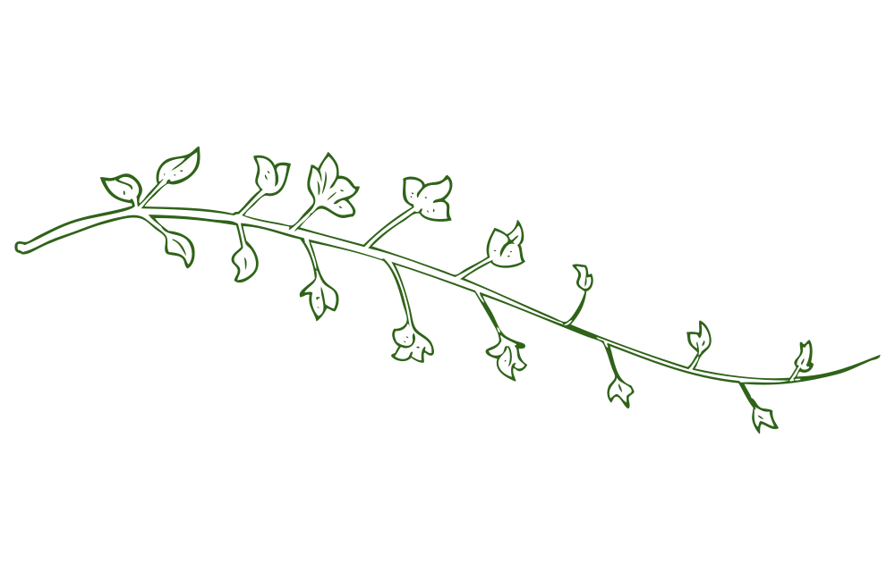

Nel Matwork la qualità degli appoggi cambia profondamente il lavoro. Una superficie stabile, uniforme e naturale permette al corpo di percepirsi con maggiore precisione, favorendo un movimento più consapevole, preciso e organizzato.
Una superficie solida e uniforme che aiuta l'allineamento e migliora la consapevolezza.
Il legno è un materiale vivo, caldo, autentico. In armonia con la natura che ci circonda.
Ogni dettaglio è scelto per prendersi cura di te e del tuo movimento.
